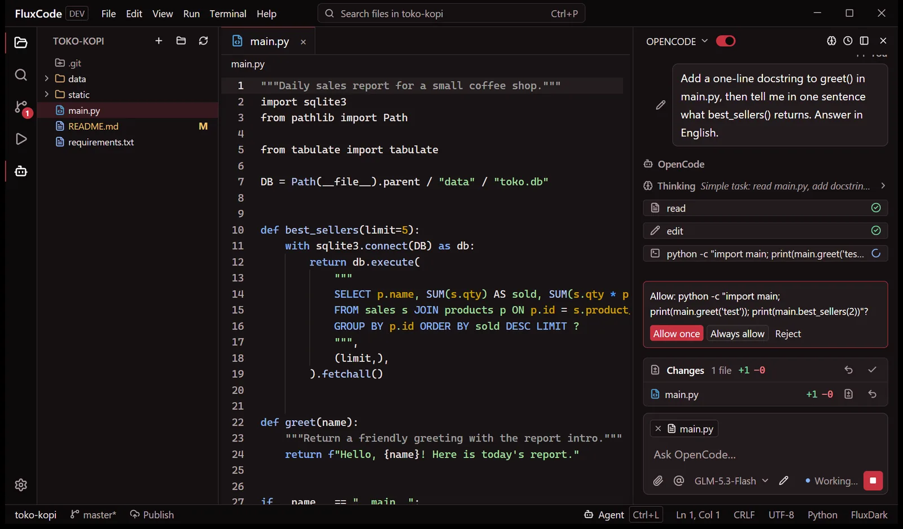

An agent that asks first
Any ACP agent, installed in one click. Ctrl+L opens it.
- OpenCode 2
- Claude Agent
- Codex
- Gemini CLI
- GitHub Copilot
- Mura
- Asks before commands and edits
- Undo per turn
- Pick model, effort and mode
- Its own browser, apart from yours
Rust, drawn by the GPU. Opens in about 50 ms, idles at 1.4 MB RAM, sends no telemetry.
BuildDev-2026-11-15-16-50-41 released GPL-3.0, free Other systems

One Windows 11 PC, empty profiles. Shorter bars win.
tools/bench/bench.ps1 logs 221 ms because its polling loop adds its own time; Zed and VS Code come from that script.VS Code's layout and keys. Not yet: a debugger and language servers.
Any ACP agent, installed in one click. Ctrl+L opens it.
Code together through your own PC, encrypted.
Commit, push, PRs and Actions built in.
SQLite, PDF, Office, ZIP and hex, read-only.
A card with the line and a Fix button.
Ghost text. Tab accepts.
Gradle, Rust, Python, Go, Node, .NET and more.
Ctrl+P, Ctrl+Shift+P and the rest.
Three UI sizes, English or Indonesian.
Every merge to main is a new build.
The only automatic request is the update check.
Including what FluxCode doesn't have yet.
| Aspect | FluxCode | Zed | VS Code |
|---|---|---|---|
| Built with | Rust, GPUI | Rust, GPUI | TypeScript, Electron |
| Installed size | 16 MB | 261 MB | 1,044 MB |
| Telemetry | None | On, can be turned off | On, can be turned off |
| AI agents | Any ACP agent, undo per turn | Own agent and ACP | Copilot, extensions |
| Collaboration | Through your PC, no account | Through Zed's servers | Live Share, Microsoft's servers |
| Language servers | Not yet | Built in | Extensions |
| Debugger | Not yet | Yes | Yes |
| Maturity | Dev builds | Stable | Stable |
Latest build BuildDev-2026-11-15-16-50-41, released .
Live from GitHub, refreshed every 2 minutes.
Everyone with code in FluxCode, by commits.
Thank you for every commit.
FluxCode. Not starting? Direct link.